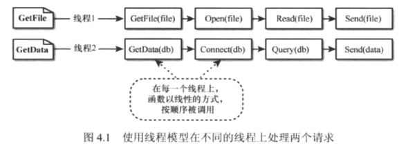
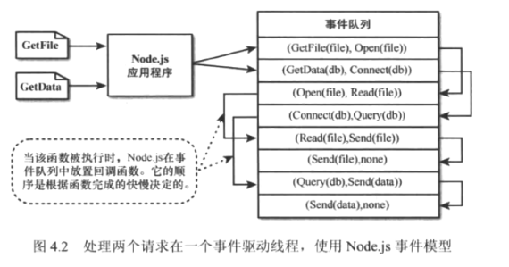
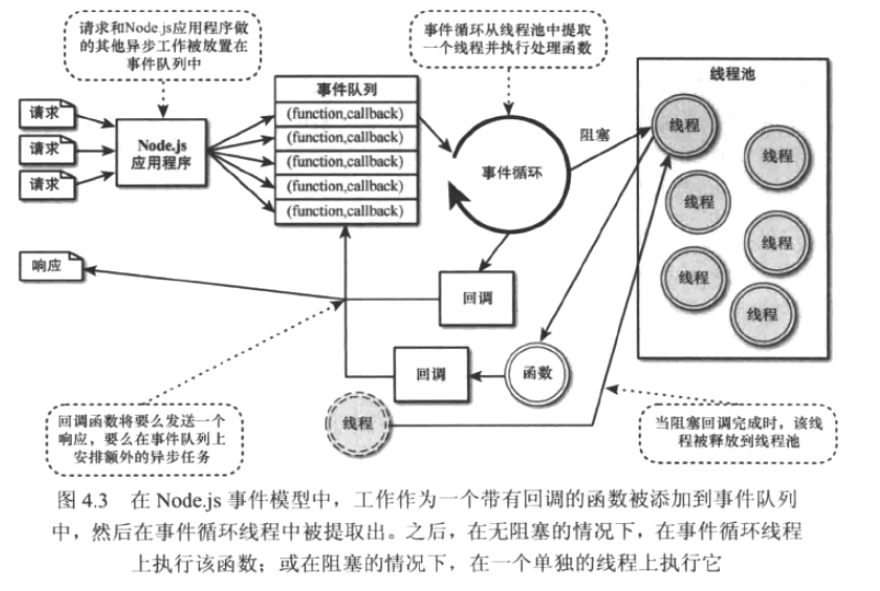

Nodejs-事件、监听器、定时器、回调
node通过事件驱动模型提供了强大的扩展性和性能，node不同于其他Web服务器采用的传统线程模型
事件模型
node应用是在一个单线程的事件驱动模型中运行的，虽然node在后台实现了一个线程池，但是应用程序本身不具备多线程的概念。
比较事件回调和线程模型
传统线程网络模型中，请求进入一个Web服务器，并被分配给一个可用的线程，对于该请求的处理工作继续在该线程上进行，直到请求完成并发回响应。
Node不是在各个线程为每个请求执行所有的工作，而是将工作添加到一个事件队列中，然后有一个单独的线程运行一个事件循环把这个工作提取出来。 事件循环抓取队列中最上面的任务，执行，然后抓取下一个。
当执行长期运行或有阻塞I/O的代码时，它不是直接调用该函数，而是把函数随同一个要在此函数完成执行的回调一起添加到事件队列，当node事件队列中所有的事件都被执行完成时，应用停止。
比如有两个请求：GetFile和GetData，GetFile请求打开文件读取内容，然后在响应中将数据返回，GetData请求链接数据库，查询所需数据，然后返回。
在线程模型中，这些操作都是在独立的按顺序发生的。

在事件回调方式中，node将GetFile和GetData请求添加到事件队列，然后先提取GetFile，执行，并指定Open回调函数添加到事件队列来完成它，然后提取GetData，执行，并指定Connect回调函数。
这种情况直到没有任何回调函数要执行。

上图中，每个线程的事件并不完全遵守直接交错顺序。比如：Connect连接请求比Read读请求需要更长时间，所以Send()操作在Query查询之前调用。
Node中的阻塞I/O
阻塞I/O停止当前线程的执行并等待回应，直到收到回应才能继续。例如：
- 读取文件
- 查询数据库
- 请求套接字
- 访问远程服务
Node使用事件回调来避免阻塞I/O，因此，执行阻塞I/O的任何请求都在后台不同的线程中执行，Node在后台实现线程池，当从队列中检索到一个I/O时，node从线程池中获取一个线程，并在线程中执行I/O操作，而不是主事件循环线程执行I/O操作，防止阻塞I/O阻碍事件队列中的其他事件。
在被阻塞的线程上执行的函数仍然可以将新的事件添加到队列中。事件循环要么在事件循环线程本身上执行操作，要么在一个单独的线程上执行操作。

线程模型必须共享CPU和资源，所以当一个线程使用CPU时，其他线程无法使用CPU。
事件回调则是尽快做出响应，完全的事件驱动，同一时间可以有尽可能多的会话，同时CPU总是只关注正在进行的任务。
事件队列
在队列中使用下列方法传递回调函数：
- 对阻塞IO调用做出回应
- 对内置事件如http.request和server.connection添加事件监听器
- 创建自定义事件发射器并对它们添加自定义监视器
- 使用preocess.nextTick选项来调度事件循环的下一次循环中被提取的操作
- 使用定时器来调度在特定时间或间隔时间后要做的
实现定时器
node中有三种类型的定时器：
- 超时时间 setTimeout
- 时间间隔 setInterval
- 即时定时器 setImmediate 立即执行操作，在IO事件的回调函数开始执行后，比任何超时时间或时间间隔事件被执行之前, 每次调用时，回调函数被放在队列中，并在遍历事件队列循环的每次迭代中，在IO事件被调用后执行。
以上三个方法都返回该定时器对象的ID，这个ID可以用于在队列提取它之前结束定时器。
对setInterval和setTimeout对象有unref方法，unref能让队列中仅有此事件时也不会调用，即事件循环不继续，可以采用ref来重新引用。
使用nexTick调度
process.nextTick能在事件循环的下一次循环中运行，nextTick在IO事件被触发之前执行，可能会导致IO事件的饥饿，node设置默认1000的process.maxTickDepth来限制事件队列的每次循环可执行的nextTick事件的数目。
1 | // 测试阻塞IO，定时器，nextTick的顺序, nexttick.js为本文件名称 |
输出：
next tick 1
next tick 2
Immediate Timer 1
Immediate Timer 2
nexttick.js Exists
实现事件发射器和监听器
创建自定义事件，并实现监听器和回调。
将自定义事件添加到JS对象中
事件使用一个EventEmitter对象发出，这个对象包含在events模块中，emit(eventName, [args])方法出发evenName事件，包括参数1
2
3var events = require('events');
var emitter = new events.EventEmitter();
emitter.emit('simpleEvent');将事件添加到JS对象中，可以通过在对象实例中调用events.EventEmitter.call(this)来在对象中继承EventEmitter功能，同时需要将events.EventEmitter.prototype添加到对象的原型中。
1
2
3
4
5
6
7Function MyObj(){
Events.EventEmitter.call(this);
}
MyObj.prototype.__proto__ = events.EventEmitter.prototype;
// 然后直接从对象实例中发出事件
var myObj = new MyObje();
myObj.emit('someEvent');把事件监听器添加到对象
通过下列方法将监听器添加到EventEmitter对象。- addListener(eventName, callback); 将回调函数附加到对象监听器中，每当eventName事件触发，回调函数就被放在事件队列中执行。
- on(eventName, callback); 同addListener
- once(eventName, callback); 只有eventName事件第一次接触时，回调函数才被放在事件队列中执行。
1
2
3
4
5function myCallback(){
……
}
var myObject = new MyObj();
myObject.on('someEvent', myCallback);
从对象中删除监听器
node在EventEmitter对象上，提供了很多辅助函数来管理包含的监听器
- listeners(eventName); 返回一个连接到eventName事件的监听器函数数组
- setMaxListeners(n); 若多于n个监听器加入到eventEmitter对象，就出发警报，默认为10
- removeListener(eventName, callback); 将callback函数从EventEmitter对象的eventName事件中删除。
事件监听器和发射器事件示例，
Account对象从EventEmitter类继承并提供两种方法，deposit（存款）和withdraw（取款），这两个方法都发出balanceChanged事件，checkGoal(acc, goal)回调函数的实现不太一样，展示了如何在事件被触发之前，将变量传递到该事件监听器函数。1
2
3
4
5
6
7
8
9
10
11
12
13
14
15
16
17
18
19
20
21
22
23
24
25
26
27
28
29
30
31
32
33
34
35
36
37
38
39
40
41var events = require('events');
function Account(){
this.balance = 0;
events.EventEmitter.call(this);
this.deposit = function(amount){
this.balance += amount;
this.emit('balanceChanged');
};
this.withdraw = function(amount){
this.balance -= amount;
this.emit('balanceChangded');
};
}
Account.prototype.__proto__ = events.EventEmitter.prototype;
function displayBalance(){
console.log('Account balance: $%d', this.balance);
}
function checkOverdraw(){
if(this.balance < 0){
console.log('Account overdrawn!');
}
}
function checkGoal(acc, goal){
if(acc.balance > goal){
console.log('Goal Achieved');
}
}
var account = new Account;
account.on('balanceChanged', displayBalance);
account.on('balanceChanged', checkOverdraw);
account.on('balanceChanged', function(){
checkGoal(this, 1000);
});
account.deposit(220);
account.deposit(320);
account.deposit(600);
account.withdraw(1200);
输出
Account balance: $220
Account balance: $540
Account balance: $1140
Goal Achieved
实现回调
回调有三种具体的实现：
- 将参数传递给回调函数
- 在循环内处理回调函数参数
- 嵌套回调
向回调函数传递额外的参数
大部分回调函数都传递给它们的自动参数，如错误或结果缓存buff，但使用回调时，常常需要从回调函数外给他们传递额外的参数，这种时候的一个方法就是，在一个匿名函数中实现该函数，然后用来自匿名函数的参数调用回调函数。
如下，有两个sawCar事件处理程序，sawCar仅发出make参数。 第一个程序实现了logCar(make)回调处理程序，在logColorCar添加颜色时，使用一个匿名函数，随机的选择一个颜色被传递到logColorCar(make, color)。1
2
3
4
5
6
7
8
9
10
11
12
13
14
15
16
17
18
19
20
21
22
23
24
25
26
27
28
29var events = require('events');
function CarShow(){
events.EventEmitter.call(this);
this.seeCar = function(make){
this.emit('sawCar', make);
};
}
CarShow.prototype.__proto__ = events.EventEmitter.prototype;
var show = new CarShow();
function logCar(make){
console.log('Saw a '+ make);
}
function logColorCar(make, color){
console.log('Saw a %s %s', color, make);
}
show.on('sawCar', logCar);
show.on('sawCar', function(make){
var colors = ['red', 'blue', 'black'];
var color = colors[Math.floor(Math.random()*3)];
logColorCar(make, color);
});
show.seeCar('Ferrai');
show.seeCar('Porsche');
show.seeCar('Bugatti');
show.seeCar('Lamborghini');
show.seeCar('Aston Martin');
输出
Saw a Ferrai
Saw a blue Ferrai
Saw a Porsche
Saw a black Porsche
Saw a Bugatti
Saw a blue Bugatti
Saw a Lamborghini
Saw a blue Lamborghini
Saw a Aston Martin
Saw a blue Aston Martin
在回调中实现闭包
异步回调往往与闭包有关，闭包（Closure）是一个JS术语，表示变量绑定到一个函数的作用域，但不绑定到它的父函数的作用域，当执行一个异步回调时，父函数的作用域可能修改（比如遍历并每次迭代时改变值）。
若某个回调函数需要访问父函数的作用域的变量，就需要提供闭包，使这些值在回调函数从事件队列中被提取出来时可以得到，可以在函数块内部封装一个异步调用并传入所需变量达到目的。
如下代码演示如何为logCar异步函数提供闭包的包装器函数，1
2
3
4
5
6
7
8
9
10
11
12
13
14
15
16
17
18
19
20
21
22function logCar(logMsg, callback){
process.nextTick(function(){
callback(logMsg);
});
}
var cars = ['Ferrari', 'Porsche', 'Bugatti'];
for(var i in cars){
var message = 'Saw a '+ cars[i];
logCar(message, function(){
console.log('Normal Callback '+ message);
});
}
for(var i in cars){
var message = 'Saw a '+ cars[i];
(function(msg){
logCar(msg, function(){
console.log('Closure Callback '+ msg);
});
})(message);
}
输出
Normal Callback Saw a Bugatti
Normal Callback Saw a Bugatti
Normal Callback Saw a Bugatti
Closure Callback Saw a Ferrari
Closure Callback Saw a Porsche
Closure Callback Saw a Bugatti
在这个测试中，为了使回调真正的异步，使用process.nextTick()方法来调度回调函数。
在程序中第一个for循环实现基本的回调函数，但是汽车名都是最后一个，因为每次循环迭代时，message的值都在变化。
第二个for循环实现了将消息作为msg参数传递给包装器函数，而msg的值被负载回调函数上，因此，闭包输出显示正确的消息
链式回调
使用异步的时候，若两个函数都在事件队列上，则无法保证它们的运行顺序，解决问题的方法是让异步函数的回调函数去调用该函数，执行链式回调，这样异步函数永远不会在事件队列上超过一次。
如下，执行链式回调函数的例子，列表被传递到logCars中，然后异步函数logCar被调用，且logCars作为当前logCar完成时的回调函数，因此同一时间，只有一个logCar在事件队列上。1
2
3
4
5
6
7
8
9
10
11
12
13
14
15
16
17function logCar(car, callback){
console.log('Saw a %s', car);
if(cars.length){
process.nextTick(function(){
callback();
});
}
}
function logCars(cars){
var car = cars.pop();
logCar(car, function(){
logCars(cars);
});
}
var cars = ['Ferrari', 'Porsche', 'Bugatti', 'Lamborghini', 'Aston Martin'];
logCars(cars);
输出
Saw a Aston Martin
Saw a Lamborghini
Saw a Bugatti
Saw a Porsche
Saw a Ferrari